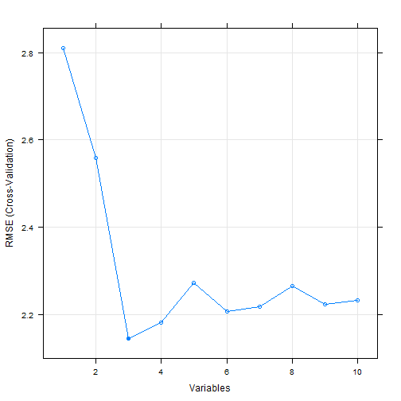

Objective
How many predictors must I use to get the outcome?
Use the application to find out!

MJ
Data Science
How many predictors must I use to get the outcome?
Use the application to find out!
This app provides a user friendly interface in order to perform automatic feature selection from a set of observations (known features) using Recursive Feature Elimination (RFE) in caret package and mtcars data set.
As an example, let's see the features that must be selected to predict as most accurate as possible the Miles per US galloon using a Random Forest algorithm and 10-fold cross-validation for benchmarking!
Once the app runs, the features that have been selected are...:
predictors(featSelect)
## [1] "disp" "hp" "wt"
Simply because the Root Mean Square Error (RMSE) is reduced by selecting just that features:

Read Documentation for more information!
Enjoy!